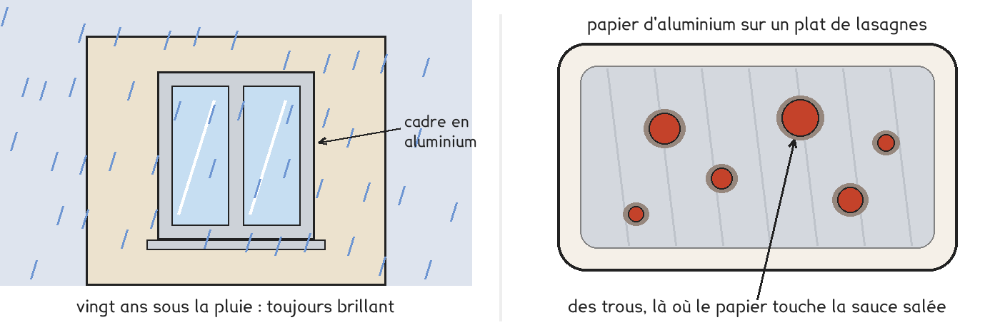
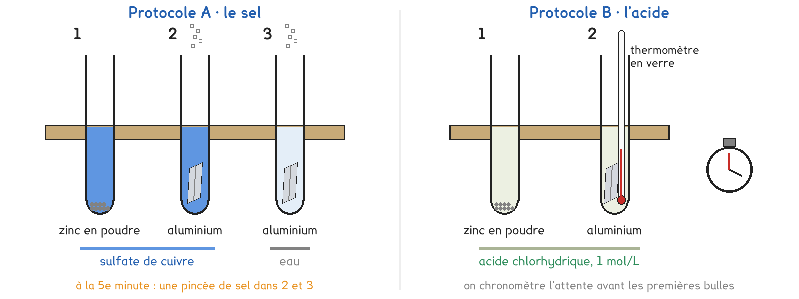

Tle Bac Pro · toutes spécialités · TP commun CT-15
Pourquoi l'aluminium ne se ronge-t-il pas, alors que la classification le prévoit ?
2 figures
Sujet. Une fenêtre en aluminium reste brillante vingt ans sous la pluie. Pourtant, l’aluminium cède ses électrons plus facilement que le fer, et même que le zinc. Et le papier d’aluminium posé sur un plat de lasagnes se troue en quelques jours, là où il touche la sauce.

Problématique : pourquoi l’aluminium ne se ronge-t-il pas comme prévu ?
Document. La classification de CT-08, complétée. Un métal réagit avec l’oxydant d’un couple placé au-dessus de lui : avec les ions cuivre, il se couvre de cuivre ; avec un acide, il dégage du dihydrogène, un gaz.
| Le couple | L’oxydant | Le réducteur |
|---|---|---|
| Cu2+/Cu | ion cuivre | cuivre |
| H+/H2 | ion hydrogène, celui des acides | dihydrogène |
| Fe2+/Fe | ion fer II | fer |
| Zn2+/Zn | ion zinc | zinc |
| Al3+/Al | ion aluminium | aluminium |
Du haut vers le bas, les réducteurs sont de plus en plus réducteurs.
a) Lire le document, puis entourer ou compléter.
| La question | La réponse |
|---|---|
| Le plus réducteur des cinq | cuivre · fer · zinc · aluminium |
| Sa demi-équation : l’ion aluminium porte trois charges + | Al → Al3+ + ……… e− |
| Ce que subit l’aluminium quand il réagit | oxydation · réduction |
Deux protocoles répondent à la même question : une partie de la classe prend A, l’autre prend B, et on compare à la fin.

Protocole A · le sel. Du zinc et de l’aluminium dans une solution d’ions cuivre. On attend cinq minutes, puis on ajoute une pincée de sel. Le tube 3, de l’eau salée sans ions cuivre, sert de témoin.
Protocole B · l’acide. Du zinc et de l’aluminium dans l’acide chlorhydrique. On chronomètre l’attente avant les premières bulles, et on suit la température du tube d’aluminium.
b) Compléter le tableau pour comparer les deux protocoles, puis choisir le vôtre avant de toucher au matériel.
| Protocole A | Protocole B | |
|---|---|---|
| La réaction de l’aluminium se voit à | un dépôt · des bulles | un dépôt · des bulles |
| Ce qu’on ajoute pour qu’elle démarre | …………………………… | …………………………… |
| Une limite | …………………………… | …………………………… |
Je prends le protocole ……… parce que …………………………………………………………………… Le professeur peut vous imposer celui qui reste disponible.
c) Avant de manipuler, prévoir avec la classification.
Entourer, pour les deux tubes de votre protocole.
| Le métal | zinc | aluminium |
|---|---|---|
| A · dans les ions cuivre | réagit · ne réagit pas | réagit · ne réagit pas |
| B · dans l’acide | réagit · ne réagit pas | réagit · ne réagit pas |
Le premier à réagir devrait être : zinc · aluminium, parce que ……………………………………………
Avant de commencer
Blouse, lunettes et gants pendant toute la manipulation.
Les tubes restent ouverts, dans le portoir, jamais en main : la réaction de l’aluminium peut s’emballer et chauffer.
Le gaz qui se dégage est du dihydrogène, qui brûle : aucune flamme sur la paillasse.
Rien à l’évier : les tubes finissent sur le portoir du bureau, sans être vidés. Le métal qui reste dégage encore du gaz.
d) Relever vos résultats dans les lignes de votre protocole.
| Ce qu’on relève | zinc | aluminium |
|---|---|---|
| A · en 5 min, un dépôt ? | oui · non | oui · non |
| A · avec le sel, attente du dépôt (s) | sans objet | |
| A · tube 3, l’eau salée seule | sans objet | rien · dépôt · bulles |
| B · attente des premières bulles | ……… s | ……… min ……… s |
| B · température, départ puis maxi (°C) | sans objet | ……… puis ……… |
| B · à 15 min, le métal est | intact · rongé · disparu | intact · rongé · disparu |
Dans votre protocole, le premier à réagir a été : zinc · aluminium.
e) Pendant l’attente, écrire l’équation de la réaction dans votre tube d’aluminium.
Autant d’électrons cédés que gagnés : on compte les demi-équations.
| La demi-équation | Combien de fois |
|---|---|
| Al → Al3+ + ……… e−, voir la question a | × 2 |
| A · Cu2+ + 2 e− → Cu | × 3 |
| B · 2 H+ + 2 e− → H2 | × 3 |
A : 2 Al + 3 Cu2+ → ……………………………………
B : 2 Al + 6 H+ → ……………………………………
Document. À l’air, l’aluminium se couvre en quelques secondes d’une couche d’oxyde d’aluminium, l’alumine, épaisse de quelques millionièmes de millimètre : elle est invisible. Elle est compacte et colle au métal. La rouille du fer, elle, est poreuse et s’écaille.
f) La classification s’est-elle trompée ? Comparer vos résultats à votre prévision c.
Avec le document, dire ce qui a retardé l’aluminium,
et ce qu’ont fait le sel ou l’acide.
g) Dessiner en coupe, très agrandie, la surface de l’aluminium dans la solution :
le métal, la couche d’oxyde, quelques ions. À gauche avant le sel ou l’acide,
à droite après, avec ce qui se forme.
Le schéma se dessine sur la feuille du TP.
h) Un groupe de l’autre protocole conclut-il comme vous ?
Quel ingrédient de la sauce des lasagnes chaque protocole imite-t-il ?
i) Répondre à la problématique en deux phrases, avec les mots « couche d’oxyde ».
Ce que ce TP a établi, et qui vaut pour d’autres métaux :
À RETENIR
La classification dit si une réaction peut se faire, pas en combien de temps.
L’aluminium se couvre à l’air d’une couche d’oxyde très mince, compacte et adhérente, qui ralentit son oxydation : c’est la passivation. Les ions chlorure du sel et les acides percent cette couche, et le métal réagit alors comme la classification le prévoit.
La rouille du fer est poreuse et s’écaille : elle ne protège pas. L’acier inoxydable et le zinc se passivent, comme l’aluminium.
Sur le bureau, un fil de cuivre trempe depuis le début de la séance dans une solution d’ions fer III, Fe3+, celle qui grave les cartes électroniques. Le couple Fe3+/Fe2+ se place au-dessus de Cu2+/Cu dans la classification. Entourer : les ions fer III peuvent · ne peuvent pas oxyder le cuivre.
Ce qu’on voit sur le bureau : ……………………………………………………………………………………
TP commun de physique-chimie, toutes spécialités. Le travail se fait sur la feuille du TP : cette page en est la version à l'écran, sans les lignes à remplir. Rien n'est enregistré.